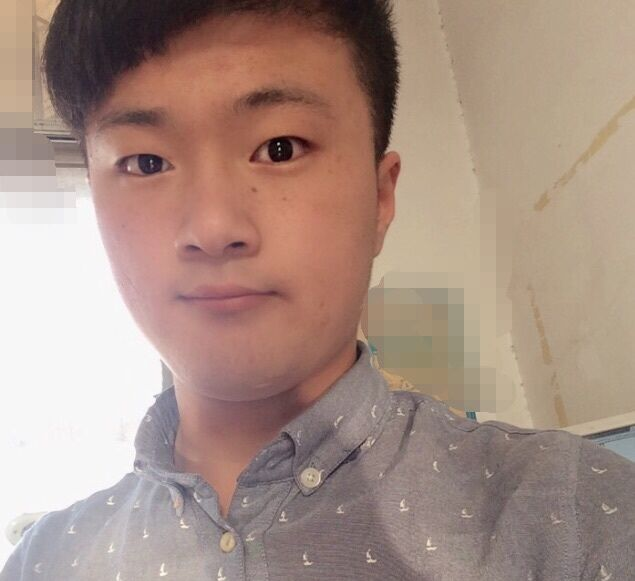

System.Console.WriteLine('{0}',"欢迎来访")
//请下滑鼠标 ー(￣～￣)ξ
//关于我:
我是钱玉昌
20岁
家乡在中国山东省济南市
目前居住在北京
我喜欢互联网,喜欢各种新技术,喜欢各种看起来美好的东西
我是一名果粉,但我也是C#的铁杆粉
我不是处女座,但我也对事情要求完美
我不算是个标准的极客,但我相信用技术可以Change The World
我很懒,但我会为了喜欢的项目而通宵达旦
我就是我,是颜色不一样的烟火

//我所擅长的:
我熟悉
C#, 熟悉
Asp.Net WebForm/MVC
熟练使用
HTML,
CSS,
Jquery,
Ajax,
Bootstrap
常用数据库
SqlServer和
MySql
了解
angluarjs
我常用
Git做版本控制,用
Nunit做单元测试
╭( ′• o •′ )╭☞
//我也折腾过:
我用
php(thinkphp)和
Java(SpringMVC)写过
CRUD项目,一点都不美
所以我变成了
C#的铁杆粉
现在业余时间折腾
Android开发,可是还没几天,不然也能在上一页留名了T_T
其实我一直想折腾
IOS,可是虚拟机太慢我又买不起MBP
...
哦!对!怎么忘了基础的
C语言!
毕竟是我的第一门语言
╭( ′• o •′ )╭☞
//其实我想说:
前面的语言和工具都是次要的!
我真正擅长的是快速学习
开发中要用的工具、技术或者类库
我都能用最快的速度掌握(毕竟我的老师叫Google)
//Talk is Cheap,Show me the code:
//我做这个页面的目的:
寻找拥有志同道合的朋友
一起做
开源,一起
研究技术,一起
喝酒吹牛...
四海之内,都是
朋友ヽ(＾▽＾)人(＾▽＾)人(＾▽＾)ﾉ
谋求一份C#/.Net开发的工作
如果您的公司有合适的岗位,
请联系我
邮箱:qianyuchang@gmail.com
知乎:
我的知乎
手机: 18560057235 [
无事勿扰]